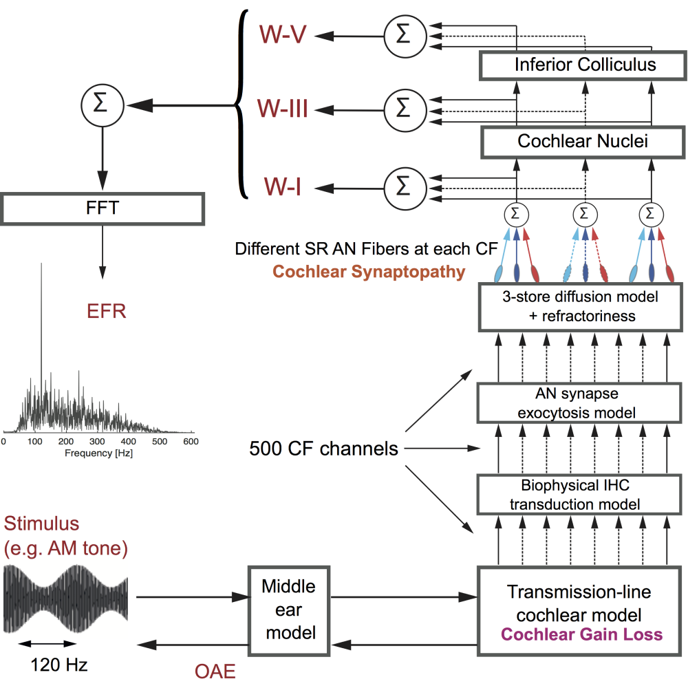
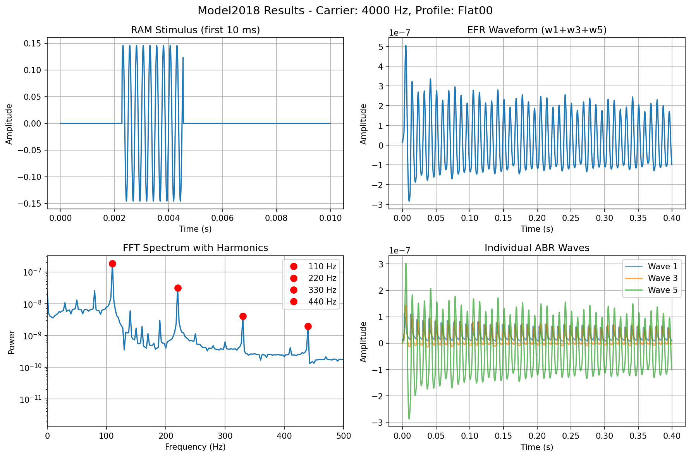

Plataforma digital para el análisis de datos auditivos mediante simulaciones biológicas complejas.
Objetivo: Facilitar a fonoaudiólogas simulaciones predictivas remotas de forma clara y accesible.
Interés inicial en evaluar terapias regenerativas de células ciliadas. Se descartaron modelos primitivos (como CompuCell3D) por mostrarse lejanos a la necesidad clínica de la fonoaudiología.
Aparece el modelo Verhulst (2018). Se convirtió en el puente ideal: una herramienta para manipular parámetros fisiológicos y observar impactos reales (potenciales evocados o EFR).
La revisión del Estado del Arte arrojó un vacío inmenso: estos potentes modelos matemáticos exigían programación avanzada, marginando permanentemente a las profesionales clínicas.
Pausar la investigación regenerativa y aprovechar esa oportunidad de innovación: desarrollar una plataforma que democratice el uso abstraíendo la brutalidad del código.
Simulación computacional avanzada del sistema auditivo periférico humano (2018).
Es una métrica que refleja cómo el oído reacciona a un sonido, produciendo impulsos nerviosos exactamente sincronizados con la envolvente del estímulo.
Señal eléctrica vital que se puede medir físicamente en el tronco cerebral.

Aquí va la imagenEntradas (Audiograma) y Salidas clave simuladas

Aquí va la imagenTono modulado en amplitud (fluctuación constante). Obliga a las neuronas auditivas a sincronizarse con el ritmo de su propia envolvente.
Señal cruda en el tiempo. Muestra cómo las neuronas auditivas "siguen" el ritmo del estímulo RAM. Refleja la cantidad de neuronas sanas activas.
Vista frecuencial del EFR. Muestra los "picos" clave que diagnostican objetivamente la fuerza de la reacción de la red neuronal del oído.
Potenciales evocados tradicionales de eventos abruptos. Muestra "estaciones de peaje" del nervio para detectar la ubicación precisa de un daño.
El modelo no aporta información diagnóstica nueva sobre pacientes regulares. No puede deducir retroactivamente un audiograma observando un EFR simulado.
Es una plataforma exclusiva de diseño y predicción investigativa.
"La visualización interactiva de estados internos mejorará el análisis clínico y educativo en comparación con las herramientas tradicionales que sólo muestran un EFR final."
Plataforma web responsiva y amigable. Recepción y carga intuitiva de audiogramas y manipulación gráfica interactiva (zoom, aislamiento de variables, etc).
Procesamientos pesados ejecutados en infraestructura 'Nube'. Paralelismo asíncrono para mantener todo fluido, sin congelar la PC del fonoaudiólogo.
Entorno autenticado donde cada investigador conserva historiales, simulaciones cruzadas y configuraciones de forma confidencial.
Sesión segura autenticada.
Sube audiograma empírico/teórico.
Ajustes patológicos del medio.
Cálculo en clúster backend.
Resultados seguros en base de datos.
Visualización e interacción gráfica.
Creando puentes reales entre investigadores y la fisiología pura sin dolores de cabeza computacionales.